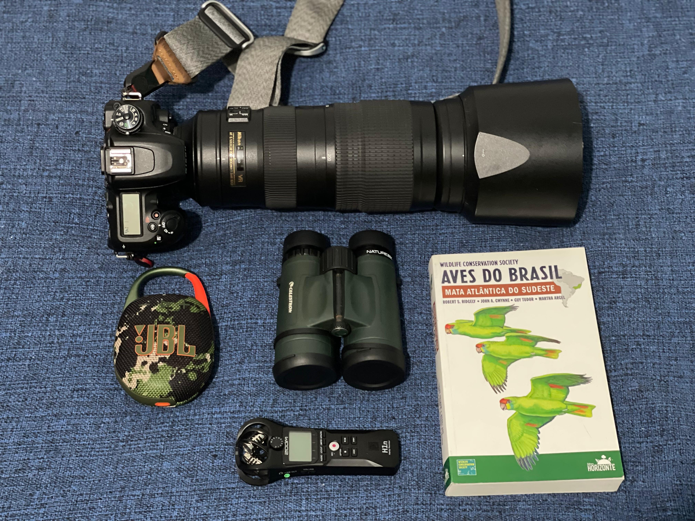
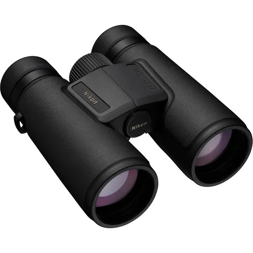
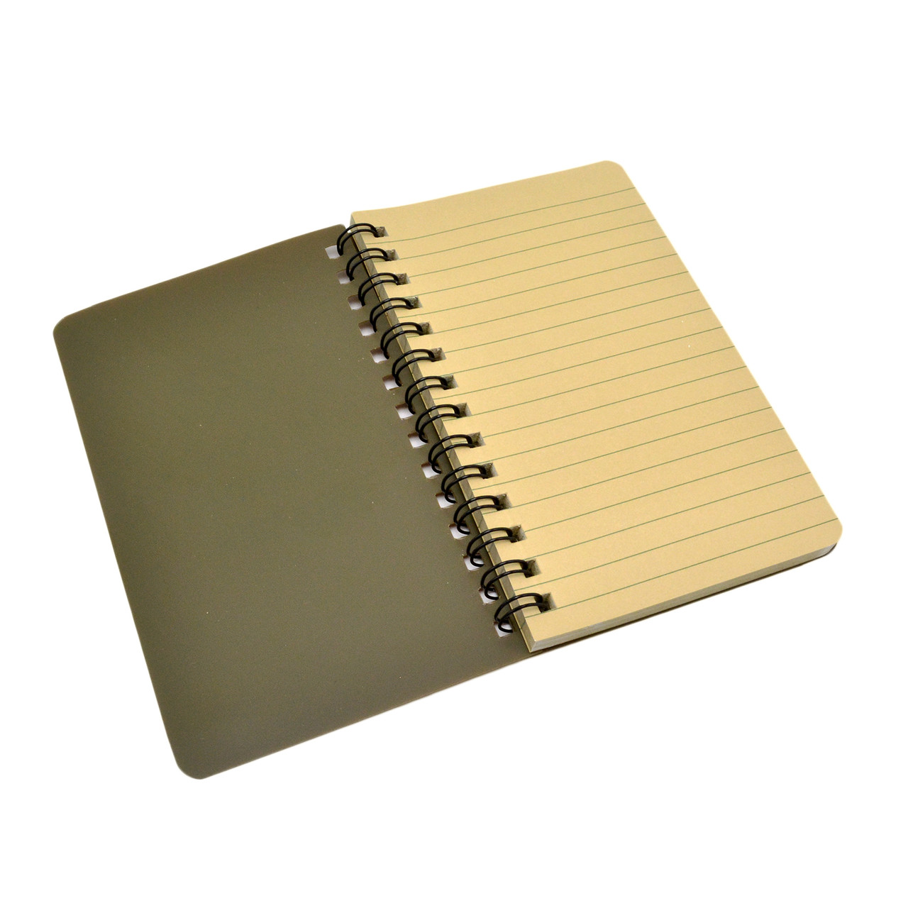
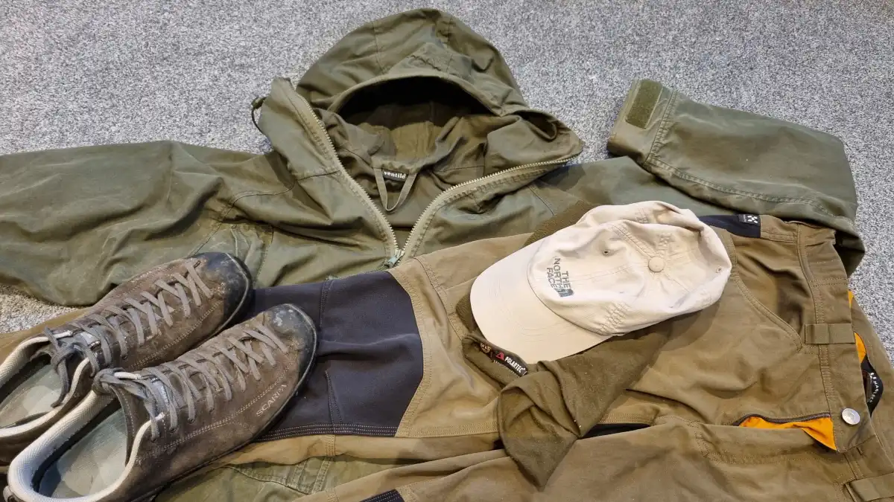
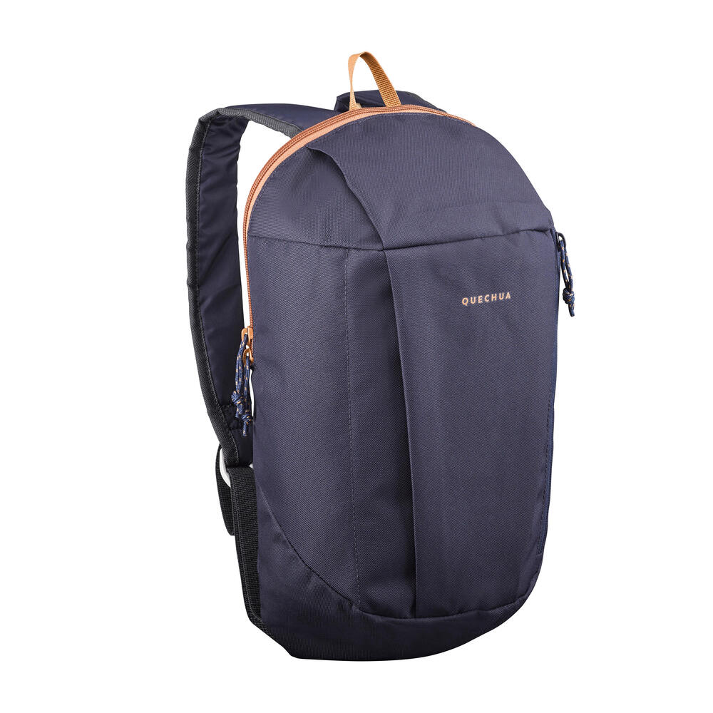
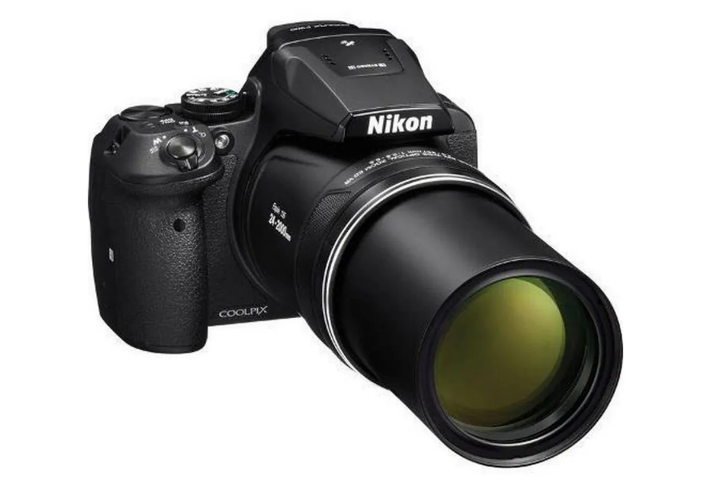
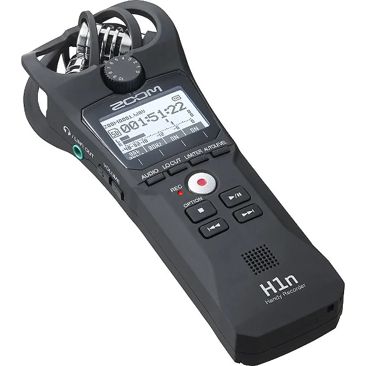
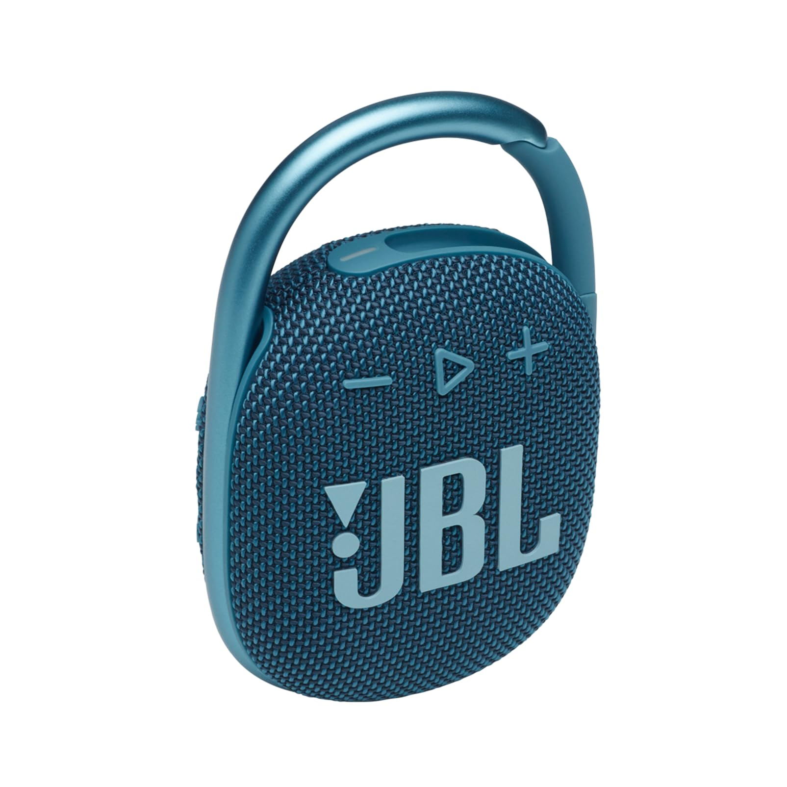
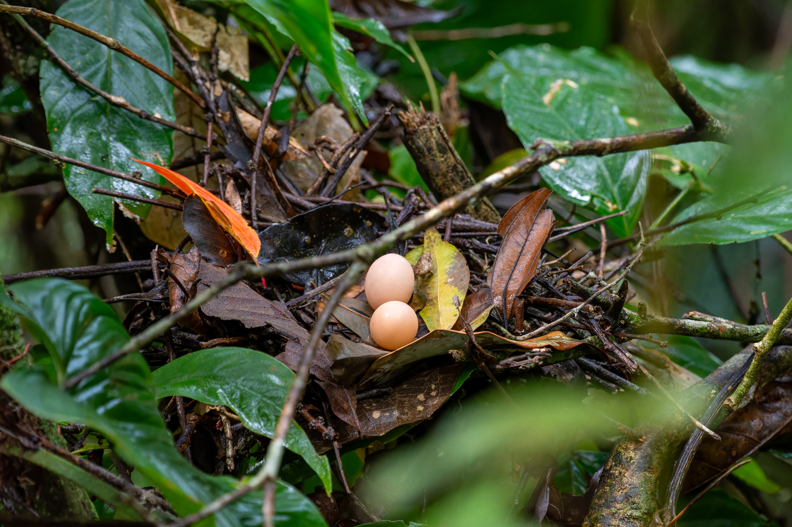

Equipamentos e Dicas para Observação de Aves
Você não precisa de um arsenal de coisas para começar a observar aves. Mas alguns equipamentos
básicos e alguns cuidados deixam as saídas muito mais confortáveis, seguras e produtivas.

1. Binóculos
O binóculo é o companheiro clássico do observador. Modelos 8x42 ou 10x42 costumam oferecer
um bom equilíbrio entre aproximação, luminosidade e peso. Mais importante do que a marca é
se acostumar a usar o binóculo com calma, até que ele vire uma extensão natural do olhar.

2. Caderno de Campo
Um caderno simples já resolve. Use para anotar data, local, espécies observadas,
comportamento e curiosidades. Com o tempo, essas anotações se tornam um diário de descoberta
e mostram como seu olhar evoluiu.

3. Roupas Confortáveis e Neutras
Prefira roupas leves, discretas e em cores terrosas ou esverdeadas. Tecidos muito brilhantes
ou barulhentos podem espantar as aves. Um chapéu ou boné ajuda a proteger do sol e da chuva leve, calçados fechados confortáveis.

4. Mochila Leve
Uma mochila pequena é suficiente. Leve água, um lanche leve, protetor solar, repelente,
capa de chuva fina e um saco para trazer de volta o próprio lixo. Quanto mais leve a mochila,
mais fácil é prestar atenção nas aves, e não no peso nas costas.

5. Guia de Campo ou Aplicativos
Guias ilustrados e aplicativos de identificação como o Merlin bird ID ajudam a confirmar o que você viu.
Eles não substituem a observação direta, mas complementam o processo e permitem comparar
registros com outros observadores.

6. Câmeras e Fotografia
Um celular com boa câmera já é suficiente para registrar momentos especiais. Já câmeras de modelos cropados com lentes de 400 mm em diante são suficientes para um bom registro. Câmeras compactas com zoom de 50x ou mais, como a Canon SX50 HS ou a Nikon P610, P900, por exemplo, também se saem muito bem nessas atividades, sendo um ótimo custo-benefício para fotógrafos amadores.
mas não são obrigatórias. O mais importante
é não deixar que a busca pela foto perfeita atrapalhe o prazer de observar.

7. Gravadores de Som
Gravadores portáteis permitem registrar cantos e chamados das aves, o que é útil para estudar
vocalizações e aprender a identificar espécies pela voz. Use sempre com cuidado, evitando
se aproximar demais de ninhos ou locais sensíveis.

8. Caixas de Som e Playback
O uso de playback (reprodução de canto para atrair aves) deve ser feito com muita cautela.
Sons repetidos podem estressar os animais e alterar seu comportamento natural. Sempre que
possível, prefira observar em silêncio. Se usar playback, que seja de forma pontual, em local
adequado e nunca perto de ninhos ativos.

9. Boa Companhia (ou Silêncio)
Observar aves em grupo torna a experiência mais segura e divertida. Ao mesmo tempo, aprender a
ficar em silêncio e escutar o ambiente é uma das melhores “ferramentas” que você pode desenvolver.

10. O que Realmente Importa
Nenhum equipamento substitui curiosidade, respeito e paciência. Mesmo sem binóculo, sem câmera
e sem guia, quem se aproxima da natureza com calma sempre encontra algo novo para ver, ouvir e aprender.
